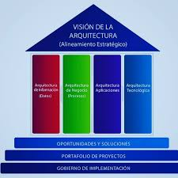

Arquitectura Empresarial
La arquitectura empresarial es una disciplina que se enfoca en la estructura y el funcionamiento de una organización. Incluye: - Estrategia de negocio: Objetivos, metas y procesos del negocio. - Aplicaciones: Software y sistemas que soportan los procesos de negocio. - Datos: Información que la organización utiliza y gestiona. - Tecnología: Infraestructura de hardware, redes y servicios de TI.
Un marco de trabajo para la arquitectura empresarial es un conjunto de herramientas, metodologías, mejores prácticas y estándares que ayudan a las organizaciones a diseñar, planificar, implementar y gestionar su arquitectura empresarial. Su objetivo principal es alinear la estrategia de negocio con la tecnología, garantizando que los sistemas, procesos, datos y recursos de TI estén organizados de manera eficiente para cumplir con los objetivos de la organización.
El objetivo principal de un marco es alinear los servicios de TI con las necesidades del negocio, garantizando que la infraestructura y los recursos de TI se utilicen de manera eficiente y efectiva para brindar valor a los usuarios y clientes.

En la actualidad existen diferentes marcos donde sus disciplinas no se limitan a la producción de los catálogos o planos del ecosistema SI/TI de la empresa; además se ocupa de planificar la arquitectura SI/TI, que dará soporte a la evolución prevista por la estrategia del negocio. Cada vez más, es percibida por la dirección de la empresa como una herramienta que permite identificar oportunidades de mejora de la eficiencia y efectividad del negocio, e incluso identificar nuevas oportunidades de evolución del mismo.
Además se ocupa de la monitorización y gobierno de los servicios actuales, la cartera de proyectos de construcción de nuevos servicios y del acompañamiento al proceso de proyectos en curso. Estos marcos se encargan de gobernar los costos y la complejidad de los servicios de SI/TI de la empresa, maximizando el valor que aportan al negocio.
En esta parte recordemos el concepto de arquitectura empresarial, que consiste en optimizar dentro de la empresa todos los elementos que apoyan la realización de la estrategia de negocio. La arquitectura empresarial posibilita tener una visión global de la empresa, incluyendo los procesos, la estructura organizacional y las tecnologías de información, lo que facilita el cumplimiento de sus objetivos estratégicos.